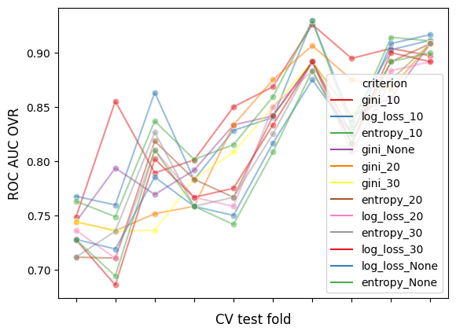
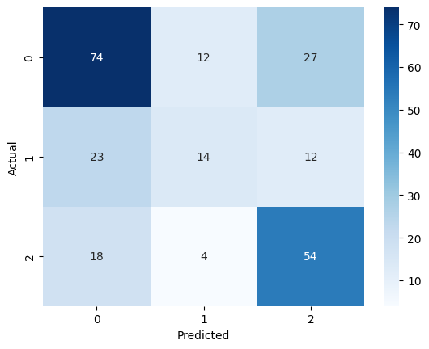

Tugas Pra UTS (2 Modeling)#
!pip install numpy
!pip install pandas
!pip install sklearn
Looking in indexes: https://pypi.org/simple, https://us-python.pkg.dev/colab-wheels/public/simple/
Requirement already satisfied: numpy in /usr/local/lib/python3.9/dist-packages (1.22.4)
Looking in indexes: https://pypi.org/simple, https://us-python.pkg.dev/colab-wheels/public/simple/
Requirement already satisfied: pandas in /usr/local/lib/python3.9/dist-packages (1.4.4)
Requirement already satisfied: numpy>=1.18.5 in /usr/local/lib/python3.9/dist-packages (from pandas) (1.22.4)
Requirement already satisfied: pytz>=2020.1 in /usr/local/lib/python3.9/dist-packages (from pandas) (2022.7.1)
Requirement already satisfied: python-dateutil>=2.8.1 in /usr/local/lib/python3.9/dist-packages (from pandas) (2.8.2)
Requirement already satisfied: six>=1.5 in /usr/local/lib/python3.9/dist-packages (from python-dateutil>=2.8.1->pandas) (1.16.0)
Looking in indexes: https://pypi.org/simple, https://us-python.pkg.dev/colab-wheels/public/simple/
Requirement already satisfied: sklearn in /usr/local/lib/python3.9/dist-packages (0.0.post1)
import numpy as np
import pandas as pd
df = pd.read_csv('/content/drive/MyDrive/prosaindata/tugas/cleaneddata.csv', index_col=0)
df.head()
| NIM | Nama | Judul | Abstrak | Kelas | judul_tokens | abstrak_tokens | |
|---|---|---|---|---|---|---|---|
| 0 | 40411100468 | A.Ubaidillah S.Kom | perancangan dan implementasi sistem database t... | sistem informasi akademik siakad merupakan sis... | RPL | ancang implementasi sistem database distribusi... | sistem informasi akademik siakad sistem inform... |
| 1 | 40411100476 | M. Basith Ardianto, | aplikasi kontrol dan monitoring jaringan kompu... | berjalannya koneksi jaringan komputer dengan l... | RPL | aplikasi kontrol monitoring jaring komputer ba... | jalan koneksi jaring komputer lancar ganggu ha... |
| 2 | 70411100070 | Heri Supriyanto | sistem pendukung keputusan optimasi penjadwala... | penjadwalan kuliah di perguruan tinggi merupak... | Komputasi | sistem dukung putus optimasi jadwal matakuliah... | jadwal kuliah guru kompleks masalah variabel t... |
| 3 | 80411100115 | Septian Rahman Hakim | sistem augmented reality animasi benda bergera... | seiring perkembangan teknologi yang ada diduni... | Komputasi | sistem augmented reality animasi benda gerak f... | iring kembang teknologi dunia muncul teknologi... |
| 4 | 70411100007 | Adi Chandra Laksono | gerak pekerja pada game real time strategy men... | gerak pekerja ada pada game yang memiliki genr... | RPL | gerak kerja game real time strategy finite sta... | gerak kerja game milik genre rts real time str... |
#Split Data
from sklearn.model_selection import train_test_split
X = df['abstrak_tokens']
y = df['Kelas']
X_train, X_test, y_train, y_test = train_test_split(X, y, test_size=0.3, random_state=42)
#Feature Extraction : TF-IDF
from sklearn.feature_extraction.text import TfidfVectorizer
vectorizer = TfidfVectorizer()
X_train_tfidf = vectorizer.fit_transform(X_train)
X_test_tfidf = vectorizer.transform(X_test)
X_train_tfidf.shape
(554, 4881)
terms = vectorizer.get_feature_names_out()
sums = X_train_tfidf.sum(axis=0)
data = []
for col, term in enumerate(terms):
data.append((term, sums[0,col]))
ranking = pd.DataFrame(data, columns=['term', 'rank'])
print(ranking.sort_values('rank', ascending=False))
term rank
4076 sistem 23.051906
701 citra 21.106837
854 data 20.648329
2709 metode 20.360294
1550 hasil 19.416384
... ... ...
3607 ratus 0.050905
1445 ghim 0.050905
1647 idle 0.045443
2578 mbps 0.045443
3543 qos 0.045443
[4881 rows x 2 columns]
#Oversamping : SMOTE
y_train.value_counts()
Komputasi 301
RPL 178
NLP 75
Name: Kelas, dtype: int64
from imblearn.over_sampling import SMOTE
X_train_resampled, y_train_resampled = SMOTE(random_state=42).fit_resample(X_train_tfidf, y_train)
y_train_resampled.value_counts()
Komputasi 301
RPL 301
NLP 301
Name: Kelas, dtype: int64
#Training Model
GridSearchCV
from sklearn.tree import DecisionTreeClassifier
from sklearn.model_selection import GridSearchCV
# defining parameter range
param_grid = {'criterion':['gini','entropy', 'log_loss'],'max_depth':[10, 20, 30, None]}
grid = GridSearchCV(DecisionTreeClassifier(), param_grid, scoring='roc_auc_ovr', cv=10, verbose=3)
# fitting the model for grid search
grid.fit(X_train_resampled, y_train_resampled)
Fitting 10 folds for each of 12 candidates, totalling 120 fits
[CV 1/10] END .....criterion=gini, max_depth=10;, score=0.748 total time= 0.1s
[CV 2/10] END .....criterion=gini, max_depth=10;, score=0.855 total time= 0.1s
[CV 3/10] END .....criterion=gini, max_depth=10;, score=0.789 total time= 0.1s
[CV 4/10] END .....criterion=gini, max_depth=10;, score=0.801 total time= 0.1s
[CV 5/10] END .....criterion=gini, max_depth=10;, score=0.850 total time= 0.1s
[CV 6/10] END .....criterion=gini, max_depth=10;, score=0.869 total time= 0.1s
[CV 7/10] END .....criterion=gini, max_depth=10;, score=0.926 total time= 0.1s
[CV 8/10] END .....criterion=gini, max_depth=10;, score=0.895 total time= 0.1s
[CV 9/10] END .....criterion=gini, max_depth=10;, score=0.904 total time= 0.1s
[CV 10/10] END ....criterion=gini, max_depth=10;, score=0.897 total time= 0.1s
[CV 1/10] END .....criterion=gini, max_depth=20;, score=0.744 total time= 0.1s
[CV 2/10] END .....criterion=gini, max_depth=20;, score=0.736 total time= 0.1s
[CV 3/10] END .....criterion=gini, max_depth=20;, score=0.752 total time= 0.1s
[CV 4/10] END .....criterion=gini, max_depth=20;, score=0.758 total time= 0.1s
[CV 5/10] END .....criterion=gini, max_depth=20;, score=0.833 total time= 0.1s
[CV 6/10] END .....criterion=gini, max_depth=20;, score=0.875 total time= 0.1s
[CV 7/10] END .....criterion=gini, max_depth=20;, score=0.906 total time= 0.1s
[CV 8/10] END .....criterion=gini, max_depth=20;, score=0.875 total time= 0.1s
[CV 9/10] END .....criterion=gini, max_depth=20;, score=0.867 total time= 0.1s
[CV 10/10] END ....criterion=gini, max_depth=20;, score=0.908 total time= 0.1s
[CV 1/10] END .....criterion=gini, max_depth=30;, score=0.744 total time= 0.1s
[CV 2/10] END .....criterion=gini, max_depth=30;, score=0.736 total time= 0.1s
[CV 3/10] END .....criterion=gini, max_depth=30;, score=0.736 total time= 0.1s
[CV 4/10] END .....criterion=gini, max_depth=30;, score=0.783 total time= 0.1s
[CV 5/10] END .....criterion=gini, max_depth=30;, score=0.808 total time= 0.1s
[CV 6/10] END .....criterion=gini, max_depth=30;, score=0.850 total time= 0.1s
[CV 7/10] END .....criterion=gini, max_depth=30;, score=0.892 total time= 0.1s
[CV 8/10] END .....criterion=gini, max_depth=30;, score=0.842 total time= 0.1s
[CV 9/10] END .....criterion=gini, max_depth=30;, score=0.875 total time= 0.1s
[CV 10/10] END ....criterion=gini, max_depth=30;, score=0.908 total time= 0.1s
[CV 1/10] END ...criterion=gini, max_depth=None;, score=0.744 total time= 0.1s
[CV 2/10] END ...criterion=gini, max_depth=None;, score=0.794 total time= 0.1s
[CV 3/10] END ...criterion=gini, max_depth=None;, score=0.769 total time= 0.1s
[CV 4/10] END ...criterion=gini, max_depth=None;, score=0.792 total time= 0.1s
[CV 5/10] END ...criterion=gini, max_depth=None;, score=0.833 total time= 0.1s
[CV 6/10] END ...criterion=gini, max_depth=None;, score=0.842 total time= 0.1s
[CV 7/10] END ...criterion=gini, max_depth=None;, score=0.892 total time= 0.1s
[CV 8/10] END ...criterion=gini, max_depth=None;, score=0.842 total time= 0.1s
[CV 9/10] END ...criterion=gini, max_depth=None;, score=0.858 total time= 0.1s
[CV 10/10] END ..criterion=gini, max_depth=None;, score=0.908 total time= 0.1s
[CV 1/10] END ..criterion=entropy, max_depth=10;, score=0.763 total time= 0.1s
[CV 2/10] END ..criterion=entropy, max_depth=10;, score=0.749 total time= 0.1s
[CV 3/10] END ..criterion=entropy, max_depth=10;, score=0.837 total time= 0.1s
[CV 4/10] END ..criterion=entropy, max_depth=10;, score=0.802 total time= 0.1s
[CV 5/10] END ..criterion=entropy, max_depth=10;, score=0.815 total time= 0.1s
[CV 6/10] END ..criterion=entropy, max_depth=10;, score=0.859 total time= 0.1s
[CV 7/10] END ..criterion=entropy, max_depth=10;, score=0.929 total time= 0.1s
[CV 8/10] END ..criterion=entropy, max_depth=10;, score=0.831 total time= 0.1s
[CV 9/10] END ..criterion=entropy, max_depth=10;, score=0.914 total time= 0.1s
[CV 10/10] END .criterion=entropy, max_depth=10;, score=0.911 total time= 0.1s
[CV 1/10] END ..criterion=entropy, max_depth=20;, score=0.711 total time= 0.1s
[CV 2/10] END ..criterion=entropy, max_depth=20;, score=0.711 total time= 0.1s
[CV 3/10] END ..criterion=entropy, max_depth=20;, score=0.819 total time= 0.1s
[CV 4/10] END ..criterion=entropy, max_depth=20;, score=0.783 total time= 0.1s
[CV 5/10] END ..criterion=entropy, max_depth=20;, score=0.767 total time= 0.1s
[CV 6/10] END ..criterion=entropy, max_depth=20;, score=0.842 total time= 0.2s
[CV 7/10] END ..criterion=entropy, max_depth=20;, score=0.892 total time= 0.1s
[CV 8/10] END ..criterion=entropy, max_depth=20;, score=0.825 total time= 0.1s
[CV 9/10] END ..criterion=entropy, max_depth=20;, score=0.892 total time= 0.1s
[CV 10/10] END .criterion=entropy, max_depth=20;, score=0.908 total time= 0.1s
[CV 1/10] END ..criterion=entropy, max_depth=30;, score=0.711 total time= 0.1s
[CV 2/10] END ..criterion=entropy, max_depth=30;, score=0.735 total time= 0.1s
[CV 3/10] END ..criterion=entropy, max_depth=30;, score=0.827 total time= 0.1s
[CV 4/10] END ..criterion=entropy, max_depth=30;, score=0.758 total time= 0.1s
[CV 5/10] END ..criterion=entropy, max_depth=30;, score=0.767 total time= 0.1s
[CV 6/10] END ..criterion=entropy, max_depth=30;, score=0.825 total time= 0.1s
[CV 7/10] END ..criterion=entropy, max_depth=30;, score=0.892 total time= 0.1s
[CV 8/10] END ..criterion=entropy, max_depth=30;, score=0.808 total time= 0.1s
[CV 9/10] END ..criterion=entropy, max_depth=30;, score=0.875 total time= 0.1s
[CV 10/10] END .criterion=entropy, max_depth=30;, score=0.908 total time= 0.1s
[CV 1/10] END criterion=entropy, max_depth=None;, score=0.728 total time= 0.2s
[CV 2/10] END criterion=entropy, max_depth=None;, score=0.694 total time= 0.2s
[CV 3/10] END criterion=entropy, max_depth=None;, score=0.810 total time= 0.2s
[CV 4/10] END criterion=entropy, max_depth=None;, score=0.758 total time= 0.2s
[CV 5/10] END criterion=entropy, max_depth=None;, score=0.742 total time= 0.2s
[CV 6/10] END criterion=entropy, max_depth=None;, score=0.808 total time= 0.2s
[CV 7/10] END criterion=entropy, max_depth=None;, score=0.883 total time= 0.2s
[CV 8/10] END criterion=entropy, max_depth=None;, score=0.817 total time= 0.2s
[CV 9/10] END criterion=entropy, max_depth=None;, score=0.892 total time= 0.2s
[CV 10/10] END criterion=entropy, max_depth=None;, score=0.900 total time= 0.2s
[CV 1/10] END .criterion=log_loss, max_depth=10;, score=0.768 total time= 0.2s
[CV 2/10] END .criterion=log_loss, max_depth=10;, score=0.760 total time= 0.2s
[CV 3/10] END .criterion=log_loss, max_depth=10;, score=0.863 total time= 0.2s
[CV 4/10] END .criterion=log_loss, max_depth=10;, score=0.783 total time= 0.2s
[CV 5/10] END .criterion=log_loss, max_depth=10;, score=0.828 total time= 0.2s
[CV 6/10] END .criterion=log_loss, max_depth=10;, score=0.840 total time= 0.2s
[CV 7/10] END .criterion=log_loss, max_depth=10;, score=0.929 total time= 0.2s
[CV 8/10] END .criterion=log_loss, max_depth=10;, score=0.837 total time= 0.2s
[CV 9/10] END .criterion=log_loss, max_depth=10;, score=0.903 total time= 0.2s
[CV 10/10] END criterion=log_loss, max_depth=10;, score=0.911 total time= 0.2s
[CV 1/10] END .criterion=log_loss, max_depth=20;, score=0.736 total time= 0.2s
[CV 2/10] END .criterion=log_loss, max_depth=20;, score=0.710 total time= 0.2s
[CV 3/10] END .criterion=log_loss, max_depth=20;, score=0.810 total time= 0.2s
[CV 4/10] END .criterion=log_loss, max_depth=20;, score=0.767 total time= 0.2s
[CV 5/10] END .criterion=log_loss, max_depth=20;, score=0.758 total time= 0.2s
[CV 6/10] END .criterion=log_loss, max_depth=20;, score=0.850 total time= 0.2s
[CV 7/10] END .criterion=log_loss, max_depth=20;, score=0.883 total time= 0.2s
[CV 8/10] END .criterion=log_loss, max_depth=20;, score=0.817 total time= 0.2s
[CV 9/10] END .criterion=log_loss, max_depth=20;, score=0.883 total time= 0.2s
[CV 10/10] END criterion=log_loss, max_depth=20;, score=0.892 total time= 0.1s
[CV 1/10] END .criterion=log_loss, max_depth=30;, score=0.728 total time= 0.1s
[CV 2/10] END .criterion=log_loss, max_depth=30;, score=0.686 total time= 0.1s
[CV 3/10] END .criterion=log_loss, max_depth=30;, score=0.802 total time= 0.1s
[CV 4/10] END .criterion=log_loss, max_depth=30;, score=0.767 total time= 0.1s
[CV 5/10] END .criterion=log_loss, max_depth=30;, score=0.775 total time= 0.1s
[CV 6/10] END .criterion=log_loss, max_depth=30;, score=0.833 total time= 0.1s
[CV 7/10] END .criterion=log_loss, max_depth=30;, score=0.892 total time= 0.1s
[CV 8/10] END .criterion=log_loss, max_depth=30;, score=0.817 total time= 0.1s
[CV 9/10] END .criterion=log_loss, max_depth=30;, score=0.900 total time= 0.1s
[CV 10/10] END criterion=log_loss, max_depth=30;, score=0.892 total time= 0.1s
[CV 1/10] END criterion=log_loss, max_depth=None;, score=0.728 total time= 0.1s
[CV 2/10] END criterion=log_loss, max_depth=None;, score=0.719 total time= 0.1s
[CV 3/10] END criterion=log_loss, max_depth=None;, score=0.785 total time= 0.1s
[CV 4/10] END criterion=log_loss, max_depth=None;, score=0.758 total time= 0.1s
[CV 5/10] END criterion=log_loss, max_depth=None;, score=0.750 total time= 0.1s
[CV 6/10] END criterion=log_loss, max_depth=None;, score=0.817 total time= 0.1s
[CV 7/10] END criterion=log_loss, max_depth=None;, score=0.875 total time= 0.1s
[CV 8/10] END criterion=log_loss, max_depth=None;, score=0.825 total time= 0.1s
[CV 9/10] END criterion=log_loss, max_depth=None;, score=0.908 total time= 0.1s
[CV 10/10] END criterion=log_loss, max_depth=None;, score=0.917 total time= 0.1s
GridSearchCV(cv=10, estimator=DecisionTreeClassifier(),
param_grid={'criterion': ['gini', 'entropy', 'log_loss'],
'max_depth': [10, 20, 30, None]},
scoring='roc_auc_ovr', verbose=3)In a Jupyter environment, please rerun this cell to show the HTML representation or trust the notebook. On GitHub, the HTML representation is unable to render, please try loading this page with nbviewer.org.
GridSearchCV(cv=10, estimator=DecisionTreeClassifier(),
param_grid={'criterion': ['gini', 'entropy', 'log_loss'],
'max_depth': [10, 20, 30, None]},
scoring='roc_auc_ovr', verbose=3)DecisionTreeClassifier()
DecisionTreeClassifier()
# Tabel hasil GridSearchCV
results_df = pd.DataFrame(grid.cv_results_)
results_df
| mean_fit_time | std_fit_time | mean_score_time | std_score_time | param_criterion | param_max_depth | params | split0_test_score | split1_test_score | split2_test_score | split3_test_score | split4_test_score | split5_test_score | split6_test_score | split7_test_score | split8_test_score | split9_test_score | mean_test_score | std_test_score | rank_test_score | |
|---|---|---|---|---|---|---|---|---|---|---|---|---|---|---|---|---|---|---|---|---|
| 0 | 0.082250 | 0.005004 | 0.004224 | 0.000238 | gini | 10 | {'criterion': 'gini', 'max_depth': 10} | 0.748270 | 0.855241 | 0.789293 | 0.801019 | 0.850000 | 0.868519 | 0.925926 | 0.894722 | 0.903889 | 0.897130 | 0.853401 | 0.054386 | 1 |
| 1 | 0.105331 | 0.005573 | 0.003942 | 0.000162 | gini | 20 | {'criterion': 'gini', 'max_depth': 20} | 0.744142 | 0.735814 | 0.751576 | 0.758333 | 0.833333 | 0.875000 | 0.906481 | 0.875000 | 0.866667 | 0.908333 | 0.825468 | 0.066869 | 5 |
| 2 | 0.103705 | 0.004153 | 0.004063 | 0.000441 | gini | 30 | {'criterion': 'gini', 'max_depth': 30} | 0.744051 | 0.735681 | 0.736218 | 0.783333 | 0.808333 | 0.850000 | 0.891667 | 0.841667 | 0.875000 | 0.908333 | 0.817428 | 0.062165 | 6 |
| 3 | 0.103352 | 0.004636 | 0.004187 | 0.000605 | gini | None | {'criterion': 'gini', 'max_depth': None} | 0.744096 | 0.793607 | 0.769236 | 0.791667 | 0.833333 | 0.841667 | 0.891667 | 0.841667 | 0.858333 | 0.908333 | 0.827361 | 0.049821 | 4 |
| 4 | 0.106077 | 0.002420 | 0.004145 | 0.000243 | entropy | 10 | {'criterion': 'entropy', 'max_depth': 10} | 0.763137 | 0.748779 | 0.836995 | 0.801574 | 0.815185 | 0.859259 | 0.929352 | 0.831481 | 0.914074 | 0.910833 | 0.841067 | 0.059372 | 3 |
| 5 | 0.125250 | 0.010173 | 0.003937 | 0.000153 | entropy | 20 | {'criterion': 'entropy', 'max_depth': 20} | 0.711437 | 0.710678 | 0.818516 | 0.783333 | 0.766667 | 0.841667 | 0.891667 | 0.825000 | 0.891667 | 0.908333 | 0.814896 | 0.067998 | 7 |
| 6 | 0.121970 | 0.001906 | 0.003927 | 0.000239 | entropy | 30 | {'criterion': 'entropy', 'max_depth': 30} | 0.711437 | 0.735453 | 0.826625 | 0.758333 | 0.766667 | 0.825000 | 0.891667 | 0.808333 | 0.875000 | 0.908333 | 0.810685 | 0.063939 | 9 |
| 7 | 0.188643 | 0.009708 | 0.005817 | 0.000328 | entropy | None | {'criterion': 'entropy', 'max_depth': None} | 0.727654 | 0.694102 | 0.810228 | 0.758333 | 0.741667 | 0.808333 | 0.883333 | 0.816667 | 0.891667 | 0.900000 | 0.803198 | 0.068763 | 12 |
| 8 | 0.159889 | 0.004548 | 0.005979 | 0.000552 | log_loss | 10 | {'criterion': 'log_loss', 'max_depth': 10} | 0.767582 | 0.759617 | 0.863354 | 0.782870 | 0.828333 | 0.840185 | 0.929352 | 0.837407 | 0.902685 | 0.911481 | 0.842287 | 0.057121 | 2 |
| 9 | 0.178150 | 0.019869 | 0.005481 | 0.000812 | log_loss | 20 | {'criterion': 'log_loss', 'max_depth': 20} | 0.736212 | 0.710453 | 0.810274 | 0.766667 | 0.758333 | 0.850000 | 0.883333 | 0.816667 | 0.883333 | 0.891667 | 0.810694 | 0.062423 | 8 |
| 10 | 0.122657 | 0.004621 | 0.003896 | 0.000169 | log_loss | 30 | {'criterion': 'log_loss', 'max_depth': 30} | 0.727654 | 0.685814 | 0.802074 | 0.766667 | 0.775000 | 0.833333 | 0.891667 | 0.816667 | 0.900000 | 0.891667 | 0.809054 | 0.068838 | 10 |
| 11 | 0.122595 | 0.005280 | 0.003881 | 0.000084 | log_loss | None | {'criterion': 'log_loss', 'max_depth': None} | 0.727879 | 0.719011 | 0.785319 | 0.758333 | 0.750000 | 0.816667 | 0.875000 | 0.825000 | 0.908333 | 0.916667 | 0.808221 | 0.068856 | 11 |
# Peringkat Score Parameter hasil GridSearchCV
results_df = results_df.sort_values(by=["rank_test_score"])
results_df = results_df.set_index(
results_df["params"].apply(lambda x: "_".join(str(val) for val in x.values()))
).rename_axis("criterion")
results_df[["params", "rank_test_score", "mean_test_score", "std_test_score"]]
| params | rank_test_score | mean_test_score | std_test_score | |
|---|---|---|---|---|
| criterion | ||||
| gini_10 | {'criterion': 'gini', 'max_depth': 10} | 1 | 0.853401 | 0.054386 |
| log_loss_10 | {'criterion': 'log_loss', 'max_depth': 10} | 2 | 0.842287 | 0.057121 |
| entropy_10 | {'criterion': 'entropy', 'max_depth': 10} | 3 | 0.841067 | 0.059372 |
| gini_None | {'criterion': 'gini', 'max_depth': None} | 4 | 0.827361 | 0.049821 |
| gini_20 | {'criterion': 'gini', 'max_depth': 20} | 5 | 0.825468 | 0.066869 |
| gini_30 | {'criterion': 'gini', 'max_depth': 30} | 6 | 0.817428 | 0.062165 |
| entropy_20 | {'criterion': 'entropy', 'max_depth': 20} | 7 | 0.814896 | 0.067998 |
| log_loss_20 | {'criterion': 'log_loss', 'max_depth': 20} | 8 | 0.810694 | 0.062423 |
| entropy_30 | {'criterion': 'entropy', 'max_depth': 30} | 9 | 0.810685 | 0.063939 |
| log_loss_30 | {'criterion': 'log_loss', 'max_depth': 30} | 10 | 0.809054 | 0.068838 |
| log_loss_None | {'criterion': 'log_loss', 'max_depth': None} | 11 | 0.808221 | 0.068856 |
| entropy_None | {'criterion': 'entropy', 'max_depth': None} | 12 | 0.803198 | 0.068763 |
import matplotlib.pyplot as plt
import seaborn as sns
# create df of model scores ordered by performance
model_scores = results_df.filter(regex=r"split\d*_test_score")
# plot 30 examples of dependency between cv fold and AUC scores
fig, ax = plt.subplots()
sns.lineplot(
data=model_scores.transpose(),
dashes=False,
palette="Set1",
marker="o",
alpha=0.5,
ax=ax,
)
ax.set_xlabel("CV test fold", size=12, labelpad=10)
ax.set_ylabel("ROC AUC OVR", size=12)
ax.tick_params(bottom=True, labelbottom=False)
plt.show()
# print correlation of AUC scores across folds
print(f"Correlation of models:\n {model_scores.transpose().corr()}")

Correlation of models:
criterion gini_10 log_loss_10 entropy_10 gini_None gini_20 \
criterion
gini_10 1.000000 0.697455 0.726517 0.916871 0.852043
log_loss_10 0.697455 1.000000 0.973194 0.801039 0.804771
entropy_10 0.726517 0.973194 1.000000 0.838629 0.849533
gini_None 0.916871 0.801039 0.838629 1.000000 0.934986
gini_20 0.852043 0.804771 0.849533 0.934986 1.000000
gini_30 0.838437 0.808959 0.884197 0.951941 0.968206
entropy_20 0.719879 0.943578 0.977214 0.831486 0.839705
log_loss_20 0.691459 0.936472 0.976047 0.803669 0.849255
entropy_30 0.738347 0.968366 0.968322 0.840056 0.811621
log_loss_30 0.694253 0.951890 0.987651 0.814319 0.860873
log_loss_None 0.748304 0.913671 0.949761 0.845427 0.844546
entropy_None 0.668372 0.949040 0.968554 0.782160 0.804955
criterion gini_30 entropy_20 log_loss_20 entropy_30 log_loss_30 \
criterion
gini_10 0.838437 0.719879 0.691459 0.738347 0.694253
log_loss_10 0.808959 0.943578 0.936472 0.968366 0.951890
entropy_10 0.884197 0.977214 0.976047 0.968322 0.987651
gini_None 0.951941 0.831486 0.803669 0.840056 0.814319
gini_20 0.968206 0.839705 0.849255 0.811621 0.860873
gini_30 1.000000 0.876766 0.876984 0.838382 0.893204
entropy_20 0.876766 1.000000 0.987076 0.979348 0.982519
log_loss_20 0.876984 0.987076 1.000000 0.965761 0.985899
entropy_30 0.838382 0.979348 0.965761 1.000000 0.951793
log_loss_30 0.893204 0.982519 0.985899 0.951793 1.000000
log_loss_None 0.900362 0.966451 0.965924 0.954258 0.964243
entropy_None 0.849555 0.980735 0.981374 0.967732 0.980922
criterion log_loss_None entropy_None
criterion
gini_10 0.748304 0.668372
log_loss_10 0.913671 0.949040
entropy_10 0.949761 0.968554
gini_None 0.845427 0.782160
gini_20 0.844546 0.804955
gini_30 0.900362 0.849555
entropy_20 0.966451 0.980735
log_loss_20 0.965924 0.981374
entropy_30 0.954258 0.967732
log_loss_30 0.964243 0.980922
log_loss_None 1.000000 0.980760
entropy_None 0.980760 1.000000
clf = DecisionTreeClassifier(criterion = 'gini', max_depth = 10)
model = clf.fit(X_train_resampled,y_train_resampled)
from sklearn import tree
tree.plot_tree(model)
[Text(0.5754032258064516, 0.9545454545454546, 'x[107] <= 0.0\ngini = 0.667\nsamples = 903\nvalue = [301, 301, 301]'),
Text(0.4342741935483871, 0.8636363636363636, 'x[3408] <= 0.0\ngini = 0.607\nsamples = 500\nvalue = [144, 94, 262]'),
Text(0.3556451612903226, 0.7727272727272727, 'x[390] <= 0.003\ngini = 0.569\nsamples = 463\nvalue = [142, 59, 262]'),
Text(0.23709677419354838, 0.6818181818181818, 'x[2709] <= 0.011\ngini = 0.612\nsamples = 299\nvalue = [132, 43, 124]'),
Text(0.15161290322580645, 0.5909090909090909, 'x[126] <= 0.018\ngini = 0.537\nsamples = 118\nvalue = [24, 20, 74]'),
Text(0.12258064516129032, 0.5, 'x[167] <= 0.024\ngini = 0.438\nsamples = 101\nvalue = [16, 12, 73]'),
Text(0.10967741935483871, 0.4090909090909091, 'x[1882] <= 0.025\ngini = 0.389\nsamples = 96\nvalue = [16, 7, 73]'),
Text(0.0967741935483871, 0.3181818181818182, 'x[2827] <= 0.0\ngini = 0.348\nsamples = 92\nvalue = [12, 7, 73]'),
Text(0.05161290322580645, 0.22727272727272727, 'x[3873] <= 0.029\ngini = 0.267\nsamples = 85\nvalue = [10, 3, 72]'),
Text(0.025806451612903226, 0.13636363636363635, 'x[3442] <= 0.017\ngini = 0.205\nsamples = 80\nvalue = [6, 3, 71]'),
Text(0.012903225806451613, 0.045454545454545456, 'gini = 0.167\nsamples = 78\nvalue = [4, 3, 71]'),
Text(0.03870967741935484, 0.045454545454545456, 'gini = 0.0\nsamples = 2\nvalue = [2, 0, 0]'),
Text(0.07741935483870968, 0.13636363636363635, 'x[97] <= 0.112\ngini = 0.32\nsamples = 5\nvalue = [4, 0, 1]'),
Text(0.06451612903225806, 0.045454545454545456, 'gini = 0.0\nsamples = 4\nvalue = [4, 0, 0]'),
Text(0.09032258064516129, 0.045454545454545456, 'gini = 0.0\nsamples = 1\nvalue = [0, 0, 1]'),
Text(0.14193548387096774, 0.22727272727272727, 'x[166] <= 0.022\ngini = 0.571\nsamples = 7\nvalue = [2, 4, 1]'),
Text(0.12903225806451613, 0.13636363636363635, 'x[1257] <= 0.033\ngini = 0.444\nsamples = 3\nvalue = [2, 0, 1]'),
Text(0.11612903225806452, 0.045454545454545456, 'gini = 0.0\nsamples = 2\nvalue = [2, 0, 0]'),
Text(0.14193548387096774, 0.045454545454545456, 'gini = 0.0\nsamples = 1\nvalue = [0, 0, 1]'),
Text(0.15483870967741936, 0.13636363636363635, 'gini = 0.0\nsamples = 4\nvalue = [0, 4, 0]'),
Text(0.12258064516129032, 0.3181818181818182, 'gini = 0.0\nsamples = 4\nvalue = [4, 0, 0]'),
Text(0.13548387096774195, 0.4090909090909091, 'gini = 0.0\nsamples = 5\nvalue = [0, 5, 0]'),
Text(0.18064516129032257, 0.5, 'x[3806] <= 0.006\ngini = 0.554\nsamples = 17\nvalue = [8, 8, 1]'),
Text(0.16774193548387098, 0.4090909090909091, 'x[452] <= 0.033\ngini = 0.34\nsamples = 10\nvalue = [8, 1, 1]'),
Text(0.15483870967741936, 0.3181818181818182, 'gini = 0.0\nsamples = 8\nvalue = [8, 0, 0]'),
Text(0.18064516129032257, 0.3181818181818182, 'x[4403] <= 0.019\ngini = 0.5\nsamples = 2\nvalue = [0, 1, 1]'),
Text(0.16774193548387098, 0.22727272727272727, 'gini = 0.0\nsamples = 1\nvalue = [0, 0, 1]'),
Text(0.1935483870967742, 0.22727272727272727, 'gini = 0.0\nsamples = 1\nvalue = [0, 1, 0]'),
Text(0.1935483870967742, 0.4090909090909091, 'gini = 0.0\nsamples = 7\nvalue = [0, 7, 0]'),
Text(0.3225806451612903, 0.5909090909090909, 'x[3512] <= 0.012\ngini = 0.552\nsamples = 181\nvalue = [108, 23, 50]'),
Text(0.2903225806451613, 0.5, 'x[3538] <= 0.029\ngini = 0.518\nsamples = 166\nvalue = [107, 23, 36]'),
Text(0.2645161290322581, 0.4090909090909091, 'x[2564] <= 0.03\ngini = 0.592\nsamples = 129\nvalue = [71, 23, 35]'),
Text(0.25161290322580643, 0.3181818181818182, 'x[352] <= 0.134\ngini = 0.567\nsamples = 123\nvalue = [71, 17, 35]'),
Text(0.21935483870967742, 0.22727272727272727, 'x[4447] <= 0.022\ngini = 0.53\nsamples = 116\nvalue = [71, 11, 34]'),
Text(0.1935483870967742, 0.13636363636363635, 'x[296] <= 0.01\ngini = 0.43\nsamples = 77\nvalue = [56, 7, 14]'),
Text(0.18064516129032257, 0.045454545454545456, 'gini = 0.377\nsamples = 72\nvalue = [55, 3, 14]'),
Text(0.2064516129032258, 0.045454545454545456, 'gini = 0.32\nsamples = 5\nvalue = [1, 4, 0]'),
Text(0.24516129032258063, 0.13636363636363635, 'x[1508] <= 0.004\ngini = 0.579\nsamples = 39\nvalue = [15, 4, 20]'),
Text(0.23225806451612904, 0.045454545454545456, 'gini = 0.509\nsamples = 25\nvalue = [15, 1, 9]'),
Text(0.25806451612903225, 0.045454545454545456, 'gini = 0.337\nsamples = 14\nvalue = [0, 3, 11]'),
Text(0.2838709677419355, 0.22727272727272727, 'x[4621] <= 0.027\ngini = 0.245\nsamples = 7\nvalue = [0, 6, 1]'),
Text(0.2709677419354839, 0.13636363636363635, 'gini = 0.0\nsamples = 6\nvalue = [0, 6, 0]'),
Text(0.2967741935483871, 0.13636363636363635, 'gini = 0.0\nsamples = 1\nvalue = [0, 0, 1]'),
Text(0.27741935483870966, 0.3181818181818182, 'gini = 0.0\nsamples = 6\nvalue = [0, 6, 0]'),
Text(0.3161290322580645, 0.4090909090909091, 'x[1539] <= 0.133\ngini = 0.053\nsamples = 37\nvalue = [36, 0, 1]'),
Text(0.3032258064516129, 0.3181818181818182, 'gini = 0.0\nsamples = 36\nvalue = [36, 0, 0]'),
Text(0.32903225806451614, 0.3181818181818182, 'gini = 0.0\nsamples = 1\nvalue = [0, 0, 1]'),
Text(0.3548387096774194, 0.5, 'x[3739] <= 0.064\ngini = 0.124\nsamples = 15\nvalue = [1, 0, 14]'),
Text(0.3419354838709677, 0.4090909090909091, 'gini = 0.0\nsamples = 14\nvalue = [0, 0, 14]'),
Text(0.36774193548387096, 0.4090909090909091, 'gini = 0.0\nsamples = 1\nvalue = [1, 0, 0]'),
Text(0.47419354838709676, 0.6818181818181818, 'x[1348] <= 0.026\ngini = 0.279\nsamples = 164\nvalue = [10, 16, 138]'),
Text(0.4612903225806452, 0.5909090909090909, 'x[774] <= 0.042\ngini = 0.211\nsamples = 156\nvalue = [10, 8, 138]'),
Text(0.4258064516129032, 0.5, 'x[3626] <= 0.122\ngini = 0.138\nsamples = 149\nvalue = [9, 2, 138]'),
Text(0.3935483870967742, 0.4090909090909091, 'x[108] <= 0.047\ngini = 0.092\nsamples = 145\nvalue = [6, 1, 138]'),
Text(0.36774193548387096, 0.3181818181818182, 'x[1550] <= 0.052\ngini = 0.055\nsamples = 141\nvalue = [3, 1, 137]'),
Text(0.3548387096774194, 0.22727272727272727, 'gini = 0.0\nsamples = 131\nvalue = [0, 0, 131]'),
Text(0.38064516129032255, 0.22727272727272727, 'x[725] <= 0.018\ngini = 0.54\nsamples = 10\nvalue = [3, 1, 6]'),
Text(0.36774193548387096, 0.13636363636363635, 'x[3473] <= 0.019\ngini = 0.245\nsamples = 7\nvalue = [0, 1, 6]'),
Text(0.3548387096774194, 0.045454545454545456, 'gini = 0.0\nsamples = 6\nvalue = [0, 0, 6]'),
Text(0.38064516129032255, 0.045454545454545456, 'gini = 0.0\nsamples = 1\nvalue = [0, 1, 0]'),
Text(0.3935483870967742, 0.13636363636363635, 'gini = 0.0\nsamples = 3\nvalue = [3, 0, 0]'),
Text(0.41935483870967744, 0.3181818181818182, 'x[4366] <= 0.041\ngini = 0.375\nsamples = 4\nvalue = [3, 0, 1]'),
Text(0.4064516129032258, 0.22727272727272727, 'gini = 0.0\nsamples = 3\nvalue = [3, 0, 0]'),
Text(0.432258064516129, 0.22727272727272727, 'gini = 0.0\nsamples = 1\nvalue = [0, 0, 1]'),
Text(0.45806451612903226, 0.4090909090909091, 'x[2365] <= 0.018\ngini = 0.375\nsamples = 4\nvalue = [3, 1, 0]'),
Text(0.44516129032258067, 0.3181818181818182, 'gini = 0.0\nsamples = 3\nvalue = [3, 0, 0]'),
Text(0.47096774193548385, 0.3181818181818182, 'gini = 0.0\nsamples = 1\nvalue = [0, 1, 0]'),
Text(0.4967741935483871, 0.5, 'x[1065] <= 0.01\ngini = 0.245\nsamples = 7\nvalue = [1, 6, 0]'),
Text(0.4838709677419355, 0.4090909090909091, 'gini = 0.0\nsamples = 1\nvalue = [1, 0, 0]'),
Text(0.5096774193548387, 0.4090909090909091, 'gini = 0.0\nsamples = 6\nvalue = [0, 6, 0]'),
Text(0.4870967741935484, 0.5909090909090909, 'gini = 0.0\nsamples = 8\nvalue = [0, 8, 0]'),
Text(0.5129032258064516, 0.7727272727272727, 'x[3548] <= 0.083\ngini = 0.102\nsamples = 37\nvalue = [2, 35, 0]'),
Text(0.5, 0.6818181818181818, 'gini = 0.0\nsamples = 35\nvalue = [0, 35, 0]'),
Text(0.5258064516129032, 0.6818181818181818, 'gini = 0.0\nsamples = 2\nvalue = [2, 0, 0]'),
Text(0.7165322580645161, 0.8636363636363636, 'x[2731] <= 0.0\ngini = 0.575\nsamples = 403\nvalue = [157, 207, 39]'),
Text(0.6, 0.7727272727272727, 'x[3924] <= 0.0\ngini = 0.554\nsamples = 168\nvalue = [99, 49, 20]'),
Text(0.5870967741935483, 0.6818181818181818, 'x[991] <= 0.002\ngini = 0.504\nsamples = 150\nvalue = [99, 31, 20]'),
Text(0.5612903225806452, 0.5909090909090909, 'x[1709] <= 0.133\ngini = 0.41\nsamples = 130\nvalue = [97, 13, 20]'),
Text(0.5483870967741935, 0.5, 'x[4829] <= 0.015\ngini = 0.373\nsamples = 125\nvalue = [97, 13, 15]'),
Text(0.535483870967742, 0.4090909090909091, 'x[3628] <= 0.071\ngini = 0.336\nsamples = 121\nvalue = [97, 9, 15]'),
Text(0.5096774193548387, 0.3181818181818182, 'x[2861] <= 0.02\ngini = 0.296\nsamples = 117\nvalue = [97, 6, 14]'),
Text(0.4967741935483871, 0.22727272727272727, 'x[2778] <= 0.018\ngini = 0.264\nsamples = 114\nvalue = [97, 6, 11]'),
Text(0.4838709677419355, 0.13636363636363635, 'x[4719] <= 0.045\ngini = 0.228\nsamples = 111\nvalue = [97, 6, 8]'),
Text(0.47096774193548385, 0.045454545454545456, 'gini = 0.202\nsamples = 109\nvalue = [97, 6, 6]'),
Text(0.4967741935483871, 0.045454545454545456, 'gini = 0.0\nsamples = 2\nvalue = [0, 0, 2]'),
Text(0.5096774193548387, 0.13636363636363635, 'gini = 0.0\nsamples = 3\nvalue = [0, 0, 3]'),
Text(0.5225806451612903, 0.22727272727272727, 'gini = 0.0\nsamples = 3\nvalue = [0, 0, 3]'),
Text(0.5612903225806452, 0.3181818181818182, 'x[4459] <= 0.049\ngini = 0.375\nsamples = 4\nvalue = [0, 3, 1]'),
Text(0.5483870967741935, 0.22727272727272727, 'gini = 0.0\nsamples = 3\nvalue = [0, 3, 0]'),
Text(0.5741935483870968, 0.22727272727272727, 'gini = 0.0\nsamples = 1\nvalue = [0, 0, 1]'),
Text(0.5612903225806452, 0.4090909090909091, 'gini = 0.0\nsamples = 4\nvalue = [0, 4, 0]'),
Text(0.5741935483870968, 0.5, 'gini = 0.0\nsamples = 5\nvalue = [0, 0, 5]'),
Text(0.6129032258064516, 0.5909090909090909, 'x[107] <= 0.053\ngini = 0.18\nsamples = 20\nvalue = [2, 18, 0]'),
Text(0.6, 0.5, 'gini = 0.0\nsamples = 18\nvalue = [0, 18, 0]'),
Text(0.6258064516129033, 0.5, 'gini = 0.0\nsamples = 2\nvalue = [2, 0, 0]'),
Text(0.6129032258064516, 0.6818181818181818, 'gini = 0.0\nsamples = 18\nvalue = [0, 18, 0]'),
Text(0.8330645161290322, 0.7727272727272727, 'x[606] <= 0.025\ngini = 0.481\nsamples = 235\nvalue = [58, 158, 19]'),
Text(0.7564516129032258, 0.6818181818181818, 'x[2520] <= 0.026\ngini = 0.373\nsamples = 193\nvalue = [37, 148, 8]'),
Text(0.7064516129032258, 0.5909090909090909, 'x[2542] <= 0.037\ngini = 0.294\nsamples = 179\nvalue = [32, 147, 0]'),
Text(0.6709677419354839, 0.5, 'x[4439] <= 0.07\ngini = 0.231\nsamples = 165\nvalue = [22, 143, 0]'),
Text(0.6387096774193548, 0.4090909090909091, 'x[1592] <= 0.041\ngini = 0.183\nsamples = 157\nvalue = [16, 141, 0]'),
Text(0.6129032258064516, 0.3181818181818182, 'x[61] <= 0.056\ngini = 0.135\nsamples = 151\nvalue = [11, 140, 0]'),
Text(0.6, 0.22727272727272727, 'x[3369] <= 0.039\ngini = 0.102\nsamples = 148\nvalue = [8, 140, 0]'),
Text(0.5870967741935483, 0.13636363636363635, 'x[3045] <= 0.056\ngini = 0.067\nsamples = 145\nvalue = [5, 140, 0]'),
Text(0.5741935483870968, 0.045454545454545456, 'gini = 0.041\nsamples = 143\nvalue = [3, 140, 0]'),
Text(0.6, 0.045454545454545456, 'gini = 0.0\nsamples = 2\nvalue = [2, 0, 0]'),
Text(0.6129032258064516, 0.13636363636363635, 'gini = 0.0\nsamples = 3\nvalue = [3, 0, 0]'),
Text(0.6258064516129033, 0.22727272727272727, 'gini = 0.0\nsamples = 3\nvalue = [3, 0, 0]'),
Text(0.6645161290322581, 0.3181818181818182, 'x[4481] <= 0.013\ngini = 0.278\nsamples = 6\nvalue = [5, 1, 0]'),
Text(0.6516129032258065, 0.22727272727272727, 'gini = 0.0\nsamples = 5\nvalue = [5, 0, 0]'),
Text(0.6774193548387096, 0.22727272727272727, 'gini = 0.0\nsamples = 1\nvalue = [0, 1, 0]'),
Text(0.7032258064516129, 0.4090909090909091, 'x[2220] <= 0.048\ngini = 0.375\nsamples = 8\nvalue = [6, 2, 0]'),
Text(0.6903225806451613, 0.3181818181818182, 'gini = 0.0\nsamples = 6\nvalue = [6, 0, 0]'),
Text(0.7161290322580646, 0.3181818181818182, 'gini = 0.0\nsamples = 2\nvalue = [0, 2, 0]'),
Text(0.7419354838709677, 0.5, 'x[4660] <= 0.018\ngini = 0.408\nsamples = 14\nvalue = [10, 4, 0]'),
Text(0.7290322580645161, 0.4090909090909091, 'gini = 0.0\nsamples = 10\nvalue = [10, 0, 0]'),
Text(0.7548387096774194, 0.4090909090909091, 'gini = 0.0\nsamples = 4\nvalue = [0, 4, 0]'),
Text(0.8064516129032258, 0.5909090909090909, 'x[225] <= 0.008\ngini = 0.541\nsamples = 14\nvalue = [5, 1, 8]'),
Text(0.7935483870967742, 0.5, 'x[4469] <= 0.142\ngini = 0.278\nsamples = 6\nvalue = [5, 1, 0]'),
Text(0.7806451612903226, 0.4090909090909091, 'gini = 0.0\nsamples = 5\nvalue = [5, 0, 0]'),
Text(0.8064516129032258, 0.4090909090909091, 'gini = 0.0\nsamples = 1\nvalue = [0, 1, 0]'),
Text(0.8193548387096774, 0.5, 'gini = 0.0\nsamples = 8\nvalue = [0, 0, 8]'),
Text(0.9096774193548387, 0.6818181818181818, 'x[2731] <= 0.028\ngini = 0.625\nsamples = 42\nvalue = [21, 10, 11]'),
Text(0.8709677419354839, 0.5909090909090909, 'x[2009] <= 0.027\ngini = 0.598\nsamples = 19\nvalue = [3, 6, 10]'),
Text(0.8580645161290322, 0.5, 'x[3997] <= 0.02\ngini = 0.639\nsamples = 13\nvalue = [3, 6, 4]'),
Text(0.832258064516129, 0.4090909090909091, 'x[3577] <= 0.006\ngini = 0.375\nsamples = 8\nvalue = [0, 6, 2]'),
Text(0.8193548387096774, 0.3181818181818182, 'gini = 0.0\nsamples = 6\nvalue = [0, 6, 0]'),
Text(0.8451612903225807, 0.3181818181818182, 'gini = 0.0\nsamples = 2\nvalue = [0, 0, 2]'),
Text(0.8838709677419355, 0.4090909090909091, 'x[225] <= 0.002\ngini = 0.48\nsamples = 5\nvalue = [3, 0, 2]'),
Text(0.8709677419354839, 0.3181818181818182, 'gini = 0.0\nsamples = 3\nvalue = [3, 0, 0]'),
Text(0.896774193548387, 0.3181818181818182, 'gini = 0.0\nsamples = 2\nvalue = [0, 0, 2]'),
Text(0.8838709677419355, 0.5, 'gini = 0.0\nsamples = 6\nvalue = [0, 0, 6]'),
Text(0.9483870967741935, 0.5909090909090909, 'x[3875] <= 0.027\ngini = 0.355\nsamples = 23\nvalue = [18, 4, 1]'),
Text(0.9225806451612903, 0.5, 'x[1568] <= 0.046\ngini = 0.105\nsamples = 18\nvalue = [17, 0, 1]'),
Text(0.9096774193548387, 0.4090909090909091, 'gini = 0.0\nsamples = 17\nvalue = [17, 0, 0]'),
Text(0.9354838709677419, 0.4090909090909091, 'gini = 0.0\nsamples = 1\nvalue = [0, 0, 1]'),
Text(0.9741935483870968, 0.5, 'x[4111] <= 0.157\ngini = 0.32\nsamples = 5\nvalue = [1, 4, 0]'),
Text(0.9612903225806452, 0.4090909090909091, 'gini = 0.0\nsamples = 4\nvalue = [0, 4, 0]'),
Text(0.9870967741935484, 0.4090909090909091, 'gini = 0.0\nsamples = 1\nvalue = [1, 0, 0]')]
print('Decision Tree depth : ',model.get_depth())
print('Decision Tree n leaves : ',model.get_n_leaves())
Decision Tree depth : 10
Decision Tree n leaves : 70
#Evaluation
predictions = model.predict(X_test_tfidf)
# Report the confusion matrix
from sklearn import metrics
print(metrics.confusion_matrix(y_test,predictions))
[[74 12 27]
[23 14 12]
[18 4 54]]
!pip install --upgrade scikit-learn
Looking in indexes: https://pypi.org/simple, https://us-python.pkg.dev/colab-wheels/public/simple/
Requirement already satisfied: scikit-learn in /usr/local/lib/python3.9/dist-packages (1.2.2)
Requirement already satisfied: numpy>=1.17.3 in /usr/local/lib/python3.9/dist-packages (from scikit-learn) (1.22.4)
Requirement already satisfied: joblib>=1.1.1 in /usr/local/lib/python3.9/dist-packages (from scikit-learn) (1.1.1)
Requirement already satisfied: threadpoolctl>=2.0.0 in /usr/local/lib/python3.9/dist-packages (from scikit-learn) (3.1.0)
Requirement already satisfied: scipy>=1.3.2 in /usr/local/lib/python3.9/dist-packages (from scikit-learn) (1.10.1)
import seaborn as sns
from sklearn.metrics import confusion_matrix
y_pred = clf.predict(X_test_tfidf)
cm = confusion_matrix(y_test, y_pred)
sns.heatmap(cm, annot=True, cmap='Blues', fmt='g')
plt.xlabel('Predicted')
plt.ylabel('Actual')
plt.show()

# Print a classification report
print(metrics.classification_report(y_test,predictions))
precision recall f1-score support
Komputasi 0.64 0.65 0.65 113
NLP 0.47 0.29 0.35 49
RPL 0.58 0.71 0.64 76
accuracy 0.60 238
macro avg 0.56 0.55 0.55 238
weighted avg 0.59 0.60 0.59 238
# Print a classification report
print(metrics.classification_report(y_test,predictions))
precision recall f1-score support
Komputasi 0.64 0.65 0.65 113
NLP 0.47 0.29 0.35 49
RPL 0.58 0.71 0.64 76
accuracy 0.60 238
macro avg 0.56 0.55 0.55 238
weighted avg 0.59 0.60 0.59 238
from sklearn.metrics import accuracy_score, precision_score, recall_score, f1_score
# Print the overall metrics
print('Accuracy score : ', accuracy_score(y_test, predictions))
print('Precision score : ', precision_score(y_test, predictions, average='weighted'))
print('Recall score : ', recall_score(y_test, predictions, average='weighted'))
print('F1 score : ', f1_score(y_test, predictions, average='weighted'))
Accuracy score : 0.5966386554621849
Precision score : 0.5870115227016472
Recall score : 0.5966386554621849
F1 score : 0.5852353493187206
#Export Model
import os
if not os.path.exists("model"):
os.makedirs("model")
from joblib import dump
dump(model, filename="model/dtc-model-abstrak.joblib")
dump(vectorizer, filename="model/vectorizer_model_abstrak.joblib")
['model/vectorizer_model_abstrak.joblib']
#Demo
title_input = input("Masukkan Abstrak Skripsi:\n")
'''
catatan input:
sisinta um adalah sistem informasi berbasis website bertujuan untuk menampilkan data yang berkaitan dengan skripsi dan tugas akhir pada jurusan teknik elektro fakultas teknik universitas negeri malang. penggunaan sistem informasi sisinta memiliki potensi jika dikembangkan dengan mengklasifikasikan judul dan abstrak berdasarkan tema penelitiannya. tujuan penelitian ini adalah untuk menerapkan dan menguji performa algoritma decision tree classifier dalam mengklasifikasi judul skripsi dan tugas akhir, berdasarkan tema penelitian dalam kbk di jurusan teknik elektro ft um. decision tree classifier adalah algoritma supervised learning non-parametrik, yang digunakan untuk klasifikasi dan regresi. decision tree memiliki hierarki, struktur pohon, yang terdiri dari root node, branches, internal nodes dan leaf nodes. dengan menggunakan metode decision tree classifier dalam implementasinya diharapkan dapat memprediksi jenis kelompok bidang keahlian yang sesuai. data yang digunakan dalam penelitian sistem klasifikasi ini didapatkan dari database sisinta te-um berupa judul, abstrak, dan kbk yang terkait dengan tema penelitian pada skripsi dan tugas akhir tersebut.
'''
hasil = clf.predict_proba(vectorizer.transform([title_input]))
print(f"Abstrak Skripsi: {title_input}")
list1 = hasil.tolist()
cls = clf.classes_
list2 = cls.tolist()
d = {"Kelompok Bidang Keahlian":list2,"Probability":list1[0]}
df_proba = pd.DataFrame(d)
print(df_proba.sort_values("Probability", ascending=False))
StdinNotImplementedErrorTraceback (most recent call last)
<ipython-input-24-ecf696568ddd> in <cell line: 1>()
----> 1 title_input = input("Masukkan Abstrak Skripsi:\n")
2
3 '''
4 catatan input:
5 sisinta um adalah sistem informasi berbasis website bertujuan untuk menampilkan data yang berkaitan dengan skripsi dan tugas akhir pada jurusan teknik elektro fakultas teknik universitas negeri malang. penggunaan sistem informasi sisinta memiliki potensi jika dikembangkan dengan mengklasifikasikan judul dan abstrak berdasarkan tema penelitiannya. tujuan penelitian ini adalah untuk menerapkan dan menguji performa algoritma decision tree classifier dalam mengklasifikasi judul skripsi dan tugas akhir, berdasarkan tema penelitian dalam kbk di jurusan teknik elektro ft um. decision tree classifier adalah algoritma supervised learning non-parametrik, yang digunakan untuk klasifikasi dan regresi. decision tree memiliki hierarki, struktur pohon, yang terdiri dari root node, branches, internal nodes dan leaf nodes. dengan menggunakan metode decision tree classifier dalam implementasinya diharapkan dapat memprediksi jenis kelompok bidang keahlian yang sesuai. data yang digunakan dalam penelitian sistem klasifikasi ini didapatkan dari database sisinta te-um berupa judul, abstrak, dan kbk yang terkait dengan tema penelitian pada skripsi dan tugas akhir tersebut.
/usr/local/lib/python3.9/dist-packages/ipykernel/kernelbase.py in raw_input(self, prompt)
846 """
847 if not self._allow_stdin:
--> 848 raise StdinNotImplementedError(
849 "raw_input was called, but this frontend does not support input requests."
850 )
StdinNotImplementedError: raw_input was called, but this frontend does not support input requests.